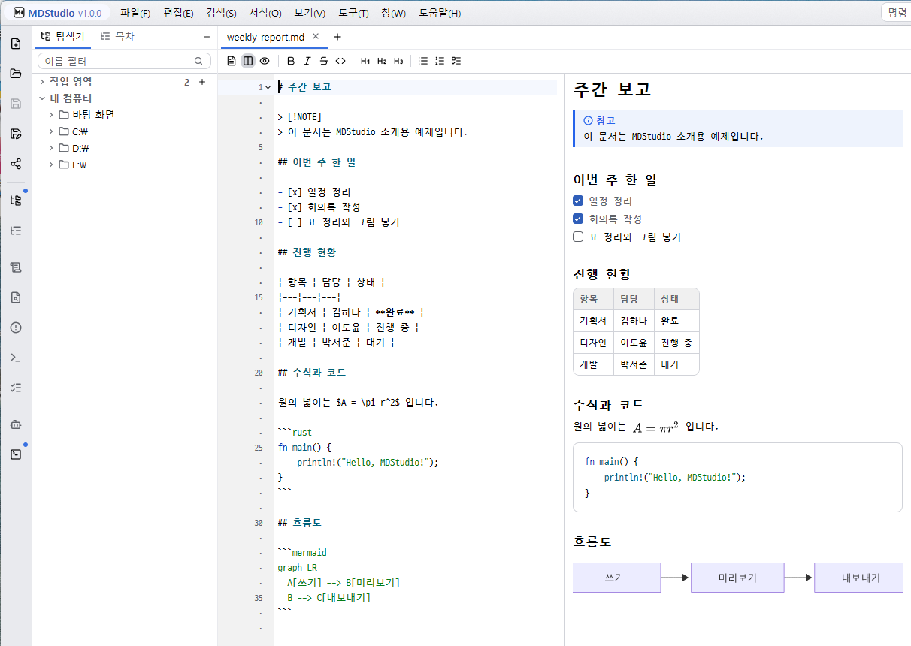
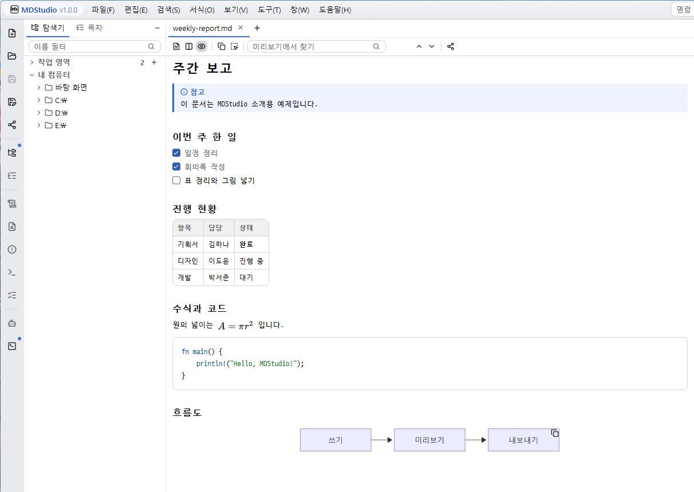
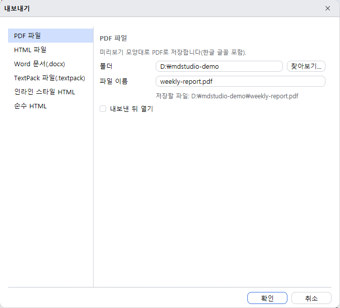

MDStudio
쓰는 대로 바로 보이는 Windows용 Markdown 편집기. 문서는 내 PC에만 둡니다.
Windows 10 버전 1809 이상 · 64비트

쓰는 데 필요한 것을 갖췄습니다
가볍게 열리고, 큰 문서에서도 멈추지 않도록 만들었습니다.
편집기 + 미리보기
소스 편집기와 미리보기를 나란히 놓거나 하나만 크게 봅니다. 큰 문서는 화면 둘레만 해석해 빠르게 엽니다.
표·수식·다이어그램
표 편집 창, 수식, mermaid와 graphviz 그림, 각주·콜아웃 같은 확장 문법을 미리보기에 그립니다.
여러 형식으로 내보내기
PDF, HTML(파일 하나), Word(.docx), 블로그용 HTML, 문서와 그림을 묶은 TextPack으로 내보냅니다.
잃지 않는 문서
탭과 세션을 복원하고, 저장하지 않은 글은 암호화한 복구 사본으로 남깁니다. 바깥에서 파일이 바뀌면 알려 줍니다.
템플릿과 스니펫
회의·보고·기술 문서·글쓰기 템플릿과 자주 쓰는 블록을 바로 넣을 수 있습니다.
내장 터미널
문서가 있는 폴더에서 PowerShell, cmd, bash를 아래 창에서 바로 씁니다.
화면 둘러보기


원할 때만 켜는 확장
모두 기본은 꺼져 있거나, 사용자가 직접 설정해야 동작합니다.
AI
채팅과 선택한 글 편집. 제공자와 API 키는 사용자가 정하고, 키는 Windows 자격 증명 관리자에만 저장됩니다.
플러그인
자바스크립트 파일 하나로 반복 작업을 자동화합니다. 기본 플러그인이 함께 설치됩니다.
AI 에이전트 연결(MCP)
Claude Desktop 같은 앱이 열린 문서를 읽고 고치게 합니다. 이 PC 안에서만, 토큰으로 연결됩니다.
사용 설명서
앱 안 설명서(F1)와 같은 내용을 웹에서도 볼 수 있습니다.
시작하기
첫 문서를 쓰고 저장하기까지.
마크다운 문법 요약
표준·GFM·확장 문법 한눈에.
내보내기
PDF·HTML·Word 로 내보내는 법.
AI
제공자와 키를 설정해 쓰기.
플러그인
반복 작업을 자동화하기.
AI 에이전트 연결
MCP 로 Claude Desktop 등과 연결.
내 문서는 내 PC에
게시자의 서버로 보내는 정보가 없습니다.
문의
[연락처 이메일]